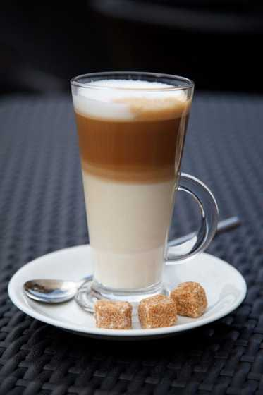
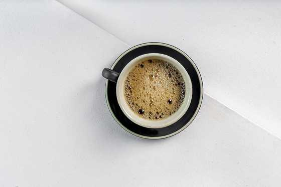
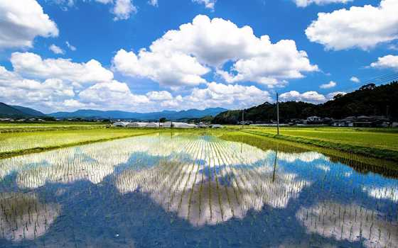
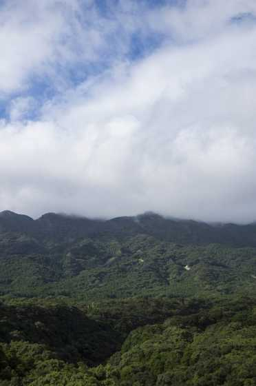
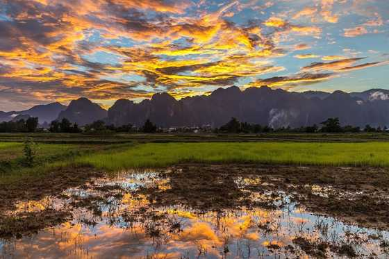

佐渡 外海府・北川内
高千カフェ
通り過ぎる集落に、ふと立ち止まれる一杯とパイを。
※この一文は制作側の表現です。
お店の由来・想い
この土地への恩返しから生まれた、小さなカフェ。
新潟日報の紹介記事によると、高千カフェは2023年秋、佐渡市外海府の北川内に開いた約40平方メートルのカフェです。店は、和子さんのご実家が営んでいた小間口商店の元倉庫を使っています。
営むのは、埼玉から移り住んだ平田純一さん・和子さんご夫妻。2020年、和子さんのお母さまの介護のために佐渡へ来られました。お母さまが亡くなったあと、埼玉へ戻ることも考えたものの、島で出会った友人や地域の方々に請われて、佐渡に残ることにしたと報じられています。
記事は、素通りしがちな集落に「立ち止まってみたい」場所ができた、恩を受けた地に新たなにぎわいが生まれた、と伝えています。
店名の意味は確認できていないため記載していません。見出しや文のまとめ方は制作側の表現です。

メニュー
季節のパスタと、佐渡のりんごのパイ。
紹介記事で触れられている提供内容は次のとおりです。ほかのメニュー、価格、提供時間は準備中です。




口コミ イメージ例
こんなお声が聞こえてきそうな店。
以下は制作側が考えた創作の例で、実在のお客様の声ではありません。
イメージ例海沿いの道をドライブ中に立ち寄りました。温かい飲み物でひと息つけて、旅の途中の良い時間になりました。
イメージ例パイをいただきながら、のんびり過ごしました。静かな集落の雰囲気に合う、落ち着いたお店です。
イメージ例季節のパスタを楽しみに、また来たいと思いました。ご夫妻の穏やかな接客が印象的でした。




アクセス
北川内の集落で、お待ちしています。
| 所在地 | 新潟県佐渡市北川内1077-3 |
|---|---|
| 電話 | 準備中 |
| 営業時間 | 準備中 |
| 定休日 | 準備中 |
| @takachicafe |
営業時間などは変更されることがあるため、最新情報はInstagramをご確認ください。



